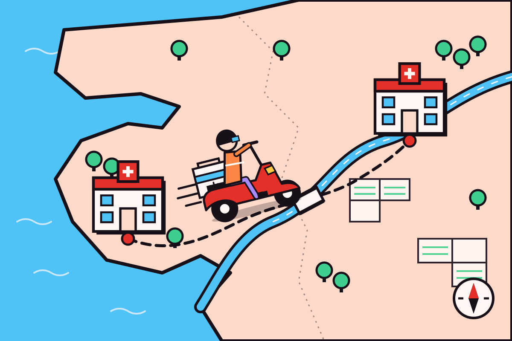

Forecasters don't know tomorrow. They know what yesterday's pattern usually leads to — and they say it early enough to matter. Hemzo does the same with hospital blood stock. Four steps, below.
A hospital usually finds out it is short of a blood group on the day it runs out. By then the only options are emergency appeals and transfers.
Shortages are rarely sudden. Stock drifts down for days first, and that drift follows patterns — weekdays, festivals, monsoon, donation camps.
Reads the public record every day, spots the drift, and says "this district runs short in three days" — while there is still time to act.
We read the public record, every day.
India already publishes blood-bank stock on eRaktKosh, the government's public portal. Nobody has to send us anything — we simply check it on a schedule and keep a copy of what it said, so we have a history nobody else is storing.
In one line: the data is already public — we just write down what it says, every single day.
Real data is messy. We line it up.
Banks report at different times, spell their own names three ways, skip days, and occasionally post a number that can't be right. We match each bank to its district, put every reading on the same daily clock, fill small gaps, and flag the values that look like typing errors rather than real drops.
In one line: before you can spot a pattern, every day has to be measured the same way.
Every day of history teaches it a little more.
Lay a district's stock history on top of itself and you can see how far each group usually wanders, and how often it drops well below its normal level. The model measures that from every snapshot we have kept, and is re-tested against a naive guess after each new one. With only weeks of record it can't yet learn weekends or monsoon — it will, as the archive grows.
In one line: it isn't guessing the future — it's measuring how stock has behaved before, and saying honestly how sure it is.
A number is useless. A warning isn't.
Every district has a working floor — the level below which routine surgery starts getting postponed. The moment the forecast line is heading under that floor, the district turns red on the map and anyone watching it gets told: short in three days, not short today.
In one line: three days is enough time to run a camp or move units. Zero days isn't.
What it does — and what it doesn't.
Worth being straight about, because a forecast people can't trust is worse than none.
→Tells you which districts are trending toward a shortage, three to seven days out.
→Shows the whole state at once, so you can see where spare units actually are.
→Publishes its confidence, so a shaky forecast looks shaky.
→Runs entirely on data that is already public — nothing private, nothing patient-level.
×Replace a blood bank’s own records — eRaktKosh lags reality by hours.
×Predict a road accident, a disaster, or any single sudden event.
×Know about stock a bank holds but never reported.
×Give clinical advice. It is a planning signal, not an official instruction.
